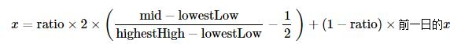
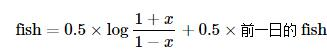
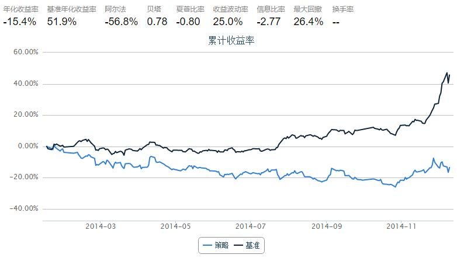
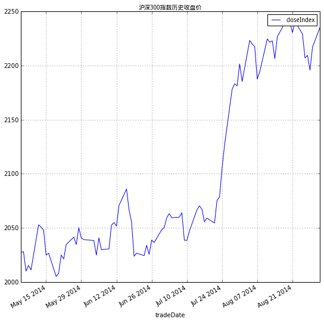
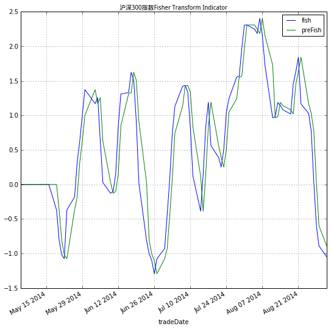

5.11 Fisher Transform · Using Fisher Transform Indicator
策略思路：
在技术分析中，很多时候，人们都把股价数据当作正态分布的数据来分析。但是，其实股价数据分布并不符合正态分布。Fisher Transformation是一个可以把股价数据变为类似于正态分布的方法。
Fisher Transformation将市场数据的走势平滑化，去掉了一些尖锐的短期振荡；利用今日和前一日该指标的交错可以给出交易信号；
例如，对于沪深300指数使用Fisher变换的结果见本文后面的具体讨论。
Fisher Transformation
定义今日中间价：
mid=(low+high)/2确定计算周期，例如可使用10日为周期。计算周期内最高价和最低价：
lowestLow=周期内最低价， highestHigh=周期内最高价定义价变参数（其中的
ratio为0-1之间常数，例如可取0.5或0.33）：
对价变参数
x使用Fisher变换，得到Fisher指标：
import quartz
import quartz.backtest as qb
import quartz.performance as qp
from quartz.api import *
import pandas as pd
import numpy as np
from datetime import datetime
from matplotlib import pylab
start = datetime(2014, 1, 1) # 回测起始时间
end = datetime(2014, 12, 10) # 回测结束时间
benchmark = 'HS300' # 使用沪深 300 作为参考标准
universe = set_universe('SH50') # 股票池
capital_base = 100000 # 起始资金
refresh_rate = 1
window = 10
# 本策略对于window非常非常敏感！！！
histFish = pd.DataFrame(0.0, index = universe, columns = ['preDiff', 'preFish', 'preState'])
def initialize(account): # 初始化虚拟账户状态
account.amount = 10000
account.universe = universe
add_history('hist', window)
def handle_data(account): # 每个交易日的买入卖出指令
for stk in account.universe:
prices = account.hist[stk]
if prices is None:
return
preDiff = histFish.at[stk, 'preDiff']
preFish = histFish.at[stk, 'preFish']
preState = histFish.at[stk, 'preState']
diff, fish = FisherTransIndicator(prices, preDiff, preFish)
if fish > preFish:
state = 1
elif fish < preFish:
state = -1
else:
state = 0
if state == 1 and preState == -1:
#stkAmount = int(account.amount / prices.iloc[-1]['openPrice'])
order(stk, account.amount)
elif state == -1 and preState == 1:
order_to(stk, 0)
histFish.at[stk, 'preDiff'] = diff
histFish.at[stk, 'preFish'] = fish
histFish.at[stk, 'preState'] = state
def FisherTransIndicator(windowData, preDiff, preFish):
# This function calculate the Fisher Transform indicator based on the data
# in the windowData.
minLowPrice = min(windowData['lowPrice'])
maxHghPrice = max(windowData['highPrice'])
tdyMidPrice = (windowData.iloc[-1]['lowPrice'] + windowData.iloc[-1]['highPrice'])/2.0
diffRatio = 0.33
# 本策略对于diffRatio同样非常敏感！！！
diff = (tdyMidPrice - minLowPrice)/(maxHghPrice - minLowPrice) - 0.5
diff = 2 * diff
diff = diffRatio * diff + (1.0 - diffRatio) * preDiff
if diff > 0.99:
diff = 0.999
elif diff < -0.99:
diff = -0.999
fish = np.log((1.0 + diff)/(1.0 - diff))
fish = 0.5 * fish + 0.5 * fish
return diff, fish

沪深300指数上使用Fisher Transformation
- 对最近半年的沪深300进行Fisher变换，得到的指标能够比较温和准确反映出指数的变化
from CAL.PyCAL import *
# DataAPI.MktIdxdGet返回pandas.DataFrame格式
index = DataAPI.MktIdxdGet(indexID = "000001.ZICN", beginDate = "20140501", endDate = "20140901")
index.head()
| indexID | tradeDate | ticker | secShortName | exchangeCD | preCloseIndex | openIndex | lowestIndex | highestIndex | closeIndex | turnoverVol | turnoverValue | CHG | CHGPct | |
|---|---|---|---|---|---|---|---|---|---|---|---|---|---|---|
| 0 | 000001.ZICN | 2014-05-05 | 1 | 上证综指 | XSHG | 2026.358 | 2022.178 | 2007.351 | 2028.957 | 2027.353 | 7993339500 | 60093487736 | 0.995 | 0.00049 |
| 1 | 000001.ZICN | 2014-05-06 | 1 | 上证综指 | XSHG | 2027.353 | 2024.256 | 2021.485 | 2038.705 | 2028.038 | 7460941100 | 57548110850 | 0.685 | 0.00034 |
| 2 | 000001.ZICN | 2014-05-07 | 1 | 上证综指 | XSHG | 2028.038 | 2023.152 | 2008.451 | 2024.631 | 2010.083 | 7436019200 | 57558051925 | -17.955 | -0.00885 |
| 3 | 000001.ZICN | 2014-05-08 | 1 | 上证综指 | XSHG | 2010.083 | 2006.853 | 2005.685 | 2036.941 | 2015.274 | 7786539300 | 59529365546 | 5.191 | 0.00258 |
| 4 | 000001.ZICN | 2014-05-09 | 1 | 上证综指 | XSHG | 2015.274 | 2016.501 | 2001.300 | 2020.454 | 2011.135 | 7622424400 | 57505383717 | -4.139 | -0.00205 |
def FisherTransIndicator(windowData, preDiff, preFish, state):
# This function calculate the Fisher Transform indicator based on the data
# in the windowData.
minLowPrice = min(windowData['lowestIndex'])
maxHghPrice = max(windowData['highestIndex'])
tdyMidPrice = (windowData.iloc[-1]['lowestIndex'] + windowData.iloc[-1]['highestIndex'])/2.0
diffRatio = 0.5
diff = (tdyMidPrice - minLowPrice)/(maxHghPrice - minLowPrice) - 0.5
diff = 2 * diff
if state == 1:
diff = diffRatio * diff + (1 - diffRatio) * preDiff
if diff > 0.995:
diff = 0.999
elif diff < -0.995:
diff = -0.999
fish = np.log((1 + diff)/(1 - diff))
if state == 1:
fish = 0.5 * fish + 0.5 * fish
return diff, fish
window = 10
index['diff'] = 0.0
index['fish'] = 0.0
index['preFish'] = 0.0
for i in range(window, index.shape[0]):
windowData = index.iloc[i-window : i]
if i == window:
diff, fish = FisherTransIndicator(windowData, 0, 0, 1)
index.at[i,'preFish'] = 0
index.at[i,'diff'] = diff
index.at[i,'fish'] = fish
else:
preDiff = index.iloc[i-1]['diff']
preFish = index.iloc[i-1]['fish']
diff, fish = FisherTransIndicator(windowData, preDiff, preFish, 1)
index.at[i,'preFish'] = preFish
index.at[i,'diff'] = diff
index.at[i,'fish'] = fish
Plot(index, settings = {'x':'tradeDate','y':'closeIndex', 'title':u'沪深300指数历史收盘价'})
Plot(index, settings = {'x':'tradeDate','y':['fish', 'preFish'], 'title':u'沪深300指数Fisher Transform Indicator'})


- 上图中的蓝色曲线表示Fisher指标，绿色曲线表示前一日的Fisher指标，两个指标的交错可以给出沪深300指数涨跌情况的信号